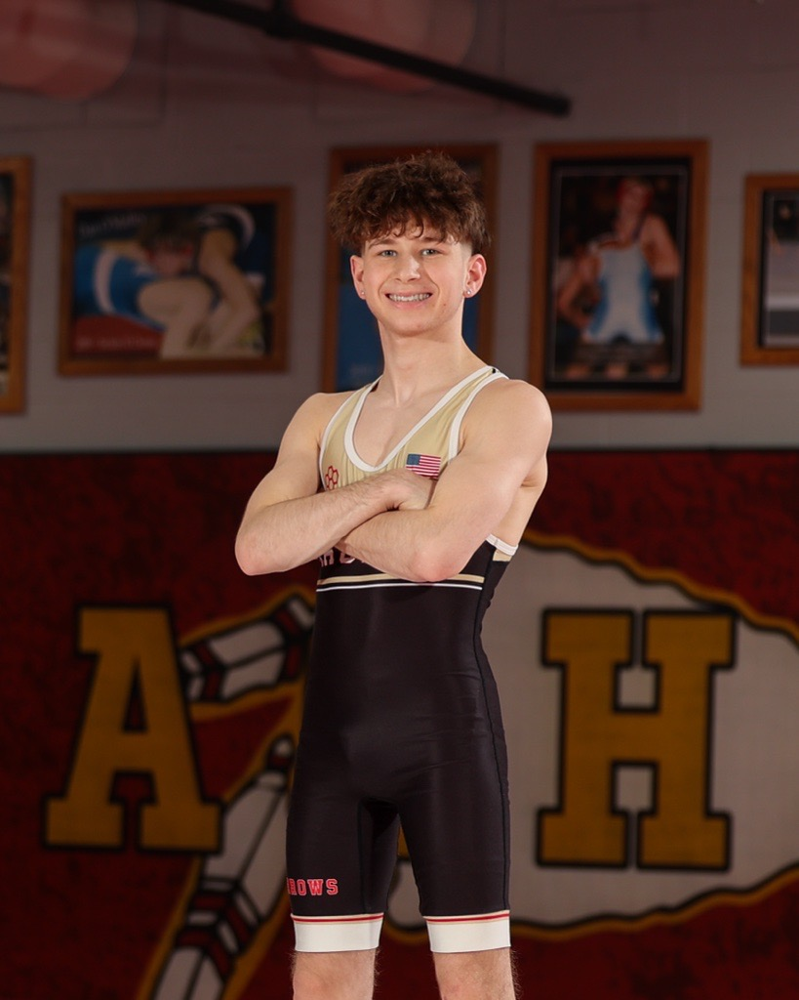
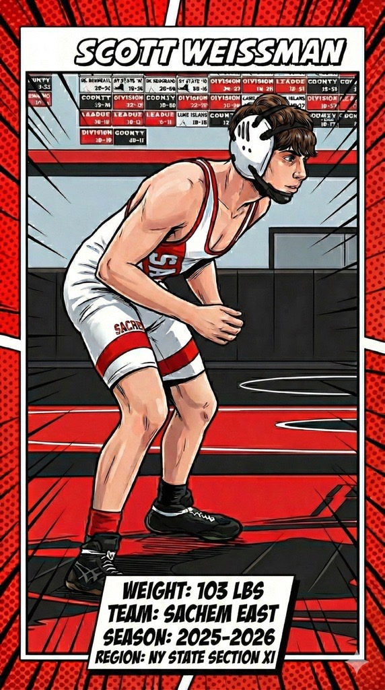

Loading profile…
Notable Stats
Loading stats…
Results & Placements
Loading results…
Photo Gallery


Sources
- Results are automatically pulled from: Flowrestling, WrestlingTournaments, and TrackWrestling (profile links you provided).
- Automation is performed by a scheduled GitHub Action that updates the
data/tournaments.jsonfile.